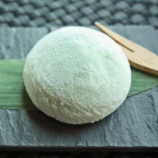

How to make green tea macha mochi

Desception
I've had mochi many times in restaurants and have always been fascinated by its unique combination of taste and texture;
but I had absolutely no clue how it was done. I basically still don't, but regardless,
this was my first attempt and I look forward to lots of criticism.
Ingredients
- 10 small scoops vanilla ice cream
- ½ cup sweet rice flour
- ½ cup cold water
- 1 pinch salt
- 2 tablespoons white sugar
- 1 teaspoon green tea powder (matcha)
- 1 tablespoon cornstarch, or as needed
Directions
Step 1
Remove and discard the top half of a cardboard egg carton. Line 10 of the cups in the bottom half of the egg carton with plastic wrap.
Step 2
Scoop ice cream into 10 prepared egg carton cups. Cover scoops with plastic wrap and freeze until very firm, at least 2 hours.
Step 3
Stir rice flour, water, and salt together in a microwave-safe bowl; add sugar and stir until completely smooth. Whisk green tea powder into rice flour mixture.
Step 4
Cover the rice flour mixture bowl with plastic wrap; microwave for 2 minutes. Stir rice flour mixture, re-cover the bowl with plastic wrap, and microwave until mochi dough is thick and sticky, about 1 1/2 minutes more.
Step 5
Lightly dust a work surface with cornstarch. Turn mochi dough out on prepared work surface. Roll dough into a 1/8-inch thick rectangle; cut dough into 10 equal squares.
Step 6
Remove ice cream balls from plastic wrap. Place 1 ice cream ball in the center of 1 mochi dough square. Gather mochi dough together to cover the ice cream ball completely, pinch the edges together at the base, and cut off any excess dough. Repeat with remaining ice cream and dough squares.
Step 7
Tightly cover each mochi ball in plastic wrap and place in egg carton, seam-side down. Freeze until firm, about 2 hours.